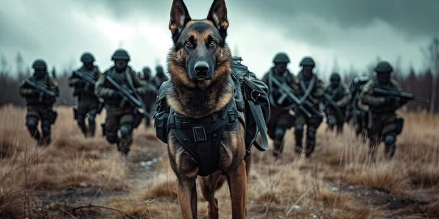
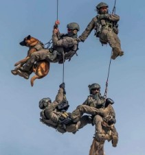

America's Elite K-9
Security Force
Gladiator Allegiance LLC is ISOK's primary operating partner — the security firm whose K-9 operators train at Legacy Ranch and deploy worldwide. Founded and led by Miriah "Brass" Allamong, a combat-proven K-9 handler with 20+ years in foreign conflict zones, GA delivers exceptional safety and security solutions by integrating highly trained body-worn K-9s with extensive tactical expertise.
GA is recognized as the industry leader in explosive, firearm, narcotics, sex trafficking, and bedbug detection canines. Through an exclusive licensing agreement with Auburn University, GA is one of only three organizations globally authorized to deploy the patented Vapor Wake / Kinetic Detection (VWDC) system.
Vapor Wake Detection Technology
GA's VWDC canines are trained from birth to detect airborne particles shed by individuals carrying explosives or firearms. They can screen hundreds of people simultaneously — in airports, stadiums, transit hubs, and public venues — without disrupting pedestrian flow. The canine can detect a threat up to two minutes after a carrier has left the area, then trail the scent plume directly to its source. National Center for Spectator Sports (NCS) certified.
K-9 Clients Include:
- 3 of only 3 organizations globally licensed to deploy Auburn University's VWDC technology
- Executive protection teams deployed stateside and internationally
- Training grounds for CIA, NSA, DEA, DHS, IDF, and more at ISOK Legacy Ranch
- Diplomatic protection for U.S. embassies, foreign ministers, and NATO dignitaries via The Sapphire Group
- Native American · Female · Disabled Veteran · 8(a) certified



Native American Federal
Security Contractor
IñupiaQ Alaska Group LLC (IAG) is an 8(a) certified company run by Native American women — co-founded by Miriah Allamong and Buffy Meyer, both Alaska Natives. The company's logo incorporates the salmon, a primary staple for the Iñupiat of Northern Alaska. IAG specializes in security, body-worn K-9 programs, advanced engineering, and data collection.
IAG currently delivers federal services across five agencies and is integrating cyber intelligence to deploy body-worn K-9s for sex trafficking, explosive, and narcotics interdiction. IAG K-9s are trained to detect TPPO — a chemical coating on electronic devices like flash drives used in human trafficking operations.
IAG's federal contracting status unlocks significant GSA set-aside opportunities: Women-Owned Small Business (WOSB), Native American-Owned, and 8(a) certifications collectively access $1B+ in reserved federal contracts annually.
Current Federal Agency Clients:
- 8(a) · Native American Women-Owned · WOSB · Disabled Veteran-Owned
- Cyber intelligence integration for body-worn K-9 sex trafficking interdiction
- TPPO detection — canine identification of trafficking-related electronics
- All employees hold Top Secret clearance
Puppy to Grave — Every K-9 Matters
War Dog Guardians 501(c)(3) is ISOK's nonprofit partner, ensuring the lifelong welfare of every K-9 trained at Legacy Ranch — from conception to retirement. This is not a policy statement; it is a binding commitment embedded in every training contract ISOK and Gladiator Allegiance sign.
War Dog Guardians operates a comprehensive adoption program that screens and selects suitable homes for retired service dogs. Every potential adopter is thoroughly vetted to ensure they can provide a loving, stable environment. Retired dogs transition into roles including medical assistance, search & rescue, tracking, and emotional support.
The War to Home veteran transitional program extends this commitment further — connecting veterans with purpose, stability, and employment through ISOK's facility and expertly trained service dogs, creating shared healing for both human and canine service members.